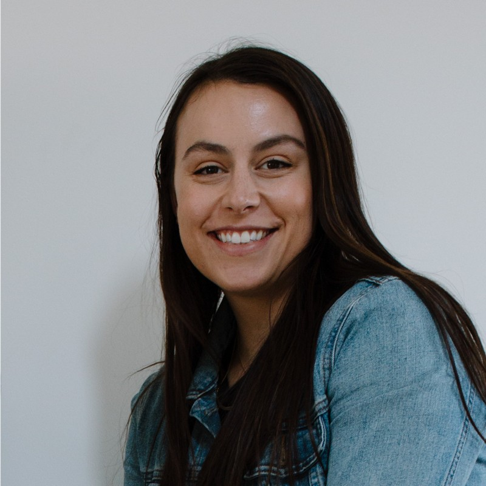

Emilie Lee Resume

Summary
I am a junior web developer that has a history in quality control pharmaceutical science.
Experience
QC Technical Coordinator
Perrigo - New Hope, MN
February 2019 to February 2020
- Demonstrated strong leadership and communication skills in working with limited direction to ensure continued process improvement of QC programs
- Collaborated with cross-functional teams, including QA, R&D, and QC, to ensure successful completion of projects and processes
- Provided expert technical support to assigned projects, utilizing robust scientific methods that ensured high quality and compliance
- Successfully developed and implemented new standard operating procedures (SOPs), analytical procedures (APs), and inspection plans (IPs) for assigned projects, resulting in streamlined and efficient processes
- Managed the QC documentation program, ensuring accuracy, completeness, and compliance with regulatory requirements
- Led the USP change control program, ensuring that all changes were documented, reviewed, and approved in a timely and compliant manner
- Managed the comprehensive training program for QC personnel, resulting in increased productivity, efficiency, and compliance
- Maintained up-to-date knowledge of relevant scientific and regulatory developments, and incorporated them into daily work to improve processes and ensure compliance
QC Chemist III - Raw Materials
Perrigo - New Hope, MN
March 2018 to February 2019
- Completed technique and instrument training on HPLC and UPLC methods
- Authored Change Controls to revise inspection plans, analytical procedures, and standard operating
procedures, as necessary
- Completed Empower review training
- Also performed all responsibilities as QC Chemist II - Raw Materials listed below
QC Chemist II - Raw Materials
Perrigo - New Hope, MN
January 2016 to March 2018
- Tested incoming raw materials of pharmaceutical drugs under cGMP and FDA requirements to ensure safety, quality, and compliance
- Operated laboratory equipment and performed identification testing in a methodical and safe manner
- Worked on continuous improvement projects to increase laboratory turn-around time on materials
- Identified out-of-spec data and worked with management to complete an investigation, as required
- Documented thorough testing records in laboratory notebook
Assistant Chemist/Quality Assurance Technician
Akona Manufacturing LLC – Rosemount, MN
March 2015 to January 2016
- Performed inspection and quality assurance testing on incoming raw materials and finished goods
- Worked with third party vendors to test prototype batches
- Collaborated with R&D Chemist to reformulate and improve existing cementitious products
- Evaluated data to support product development
- Worked with R&D Chemist and Project Manager to support new business development
Laboratory Technician
Utility Consultants Laboratory, Inc. – Janesville, MN
March 2013 to February 2015
- • Performed testing on drinking water and wastewater samples within EPA guidelines
Education
Bachelor of Arts: Chemistry
Bethany Lutheran College - Mankato, MN
December 2014
Graduated with Honors: Dean's List and Magna Cum Laude
Skills
- Proficient in Excel, Outlook, Word, PowerPoint, and SAP
- Authoring new SOPs, APs, and IPs with Change Control process
- Analyze and interpret data
- Process improvement
- Proactive problem solving and critical thinking
- Trained in cGMP, and USP testing and documentation practices
Contact me